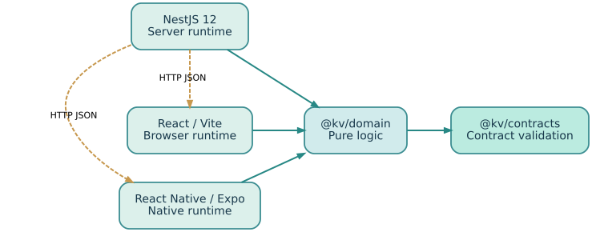
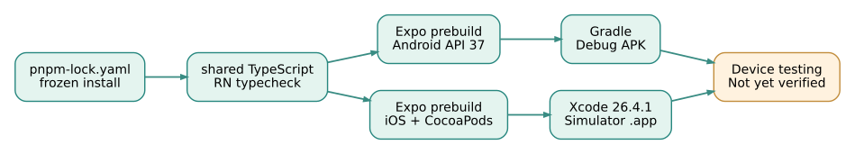

@kv/contracts
跨端 JSON 类型与运行时解析器。网络响应必须先经 unknown→校验，不是直接 as 类型。
查看源码 →实线是工作区源码依赖；虚线是 HTTP 数据交互。两者不是一回事：共享包不会让手机自动访问 Mac 上的 API。

flowchart LR C["@kv/contracts\nJSON schema + types"] D["@kv/domain\nPure business logic"] A["NestJS 12\nREST / Node runtime"] W["React Web\nVite / Browser runtime"] M["React Native 0.88\nExpo 58 / Native runtime"] D -->|workspace:*| C A -->|workspace:*| D W -->|workspace:*| D M -->|workspace:*| D A -.->|HTTP JSON| W A -.->|HTTP JSON| M
跨端 JSON 类型与运行时解析器。网络响应必须先经 unknown→校验，不是直接 as 类型。
查看源码 →纯 TypeScript 业务规则，不能依赖 Node、NestJS、React Native。
查看源码 →NestJS 12 Controller / Module，REST API 和健康探针。
查看源码 →React 19 + Vite 8，调用 API，使用共享领域数据作为离线回退。
查看源码 →Expo SDK 58 + React Native 0.88，真正使用 View/Text 等原生组件。
查看源码 →需要 Node >= 22.13、pnpm 12。依次运行；实际 Android/iOS 编译另需 SDK / Xcode。
pnpm install --frozen-lockfile pnpm build:shared pnpm check:boundaries pnpm test pnpm dev:api pnpm dev:web pnpm dev:mobile
API：http://localhost:3000/api/lessons · Web：http://localhost:5173
在 iPhone 上，localhost 指向手机，请设置 EXPO_PUBLIC_API_URL=http://电脑内网IP:3000。
这四篇是完整 Markdown 教学源稿，可以离线阅读，也可以作为团队架构评审模板。
依赖图、构建图、任务图为什么不能混为一谈
阅读 Markdown 源稿 ↓Metro、Node ESM、真实手机网络与契约错误
阅读 Markdown 源稿 ↓无锁安装、依赖缓存、原生构建的边界
阅读 Markdown 源稿 ↓让性能与治理数据而非工具热度驱动选择
阅读 Markdown 源稿 ↓此仓库保留 CI 工作流：依赖边界、类型编译、Web 与 API 构建、JSON 契约测试。RN 的 JS 类型检查与原生编译分开报告。无真实设备证据时标注为「待设备验证」。
查看验收分层与部署限制 →pnpm 锁文件确保 CI 冻结安装；Android 与 iOS 两条独立流水线分别验证 Gradle 与 Xcode。原生编译结果由 GitHub Actions 提供，模拟器或真机测试仍属于下一阶段。

为什么 package.json 不足以复现依赖图，如何通过 frozen lockfile 和缓存哈希避免漂移。
阅读工程手册 →Expo Prebuild、JDK 17、Android API 37、CocoaPods 和 Xcode 26.4.1 的完整分层验证。
查看构建流程 →将编译、签名、安装、联网、弱网、无障碍和性能分成不同证据等级。
打开验收清单 →从编译产物安装、启动，到 Metro 和 NestJS HTTP 数据链路，保存截图、日志与 Android UI 控件树，并真实点击 API 刷新按钮。
查看设备烟雾测试教程 →iOS Maestro、Android UIAutomator 和受控 HTTP 503 / 非法 JSON。真实点击、离线回退、恢复与 CI 证据。
阅读故障注入与 Maestro 教程 →